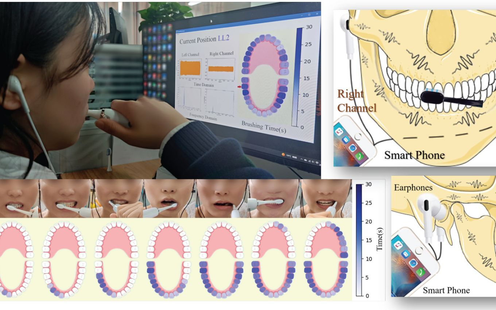
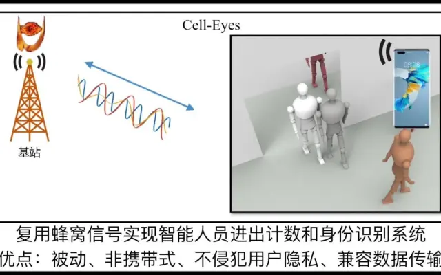
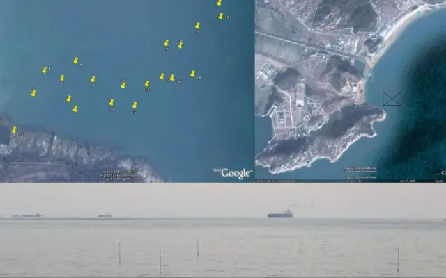
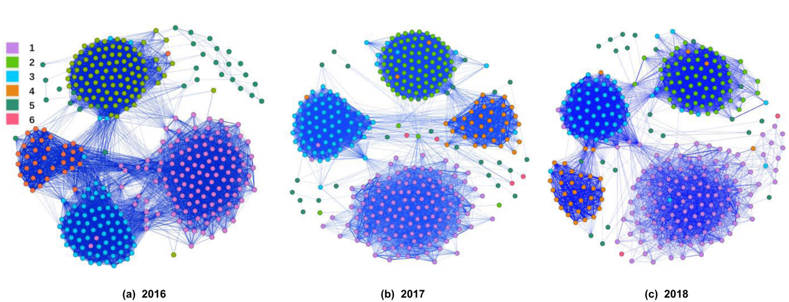
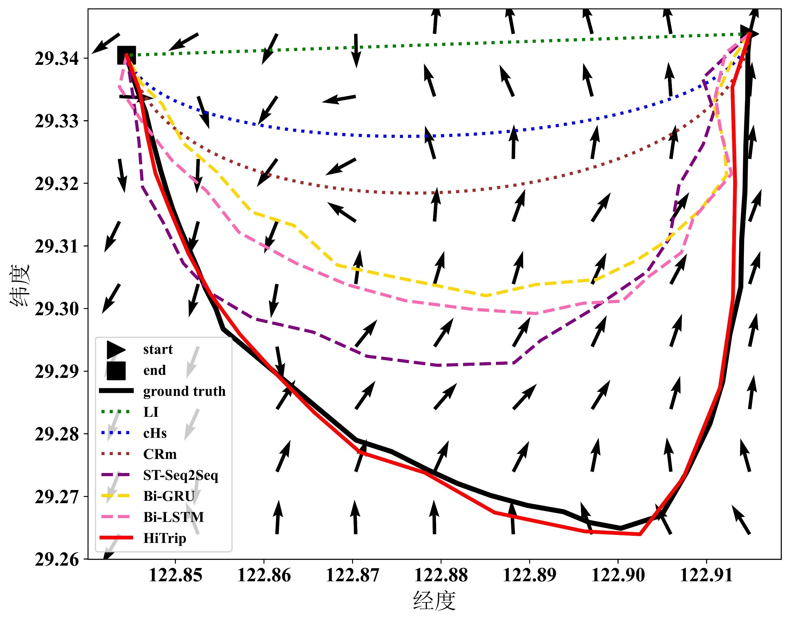
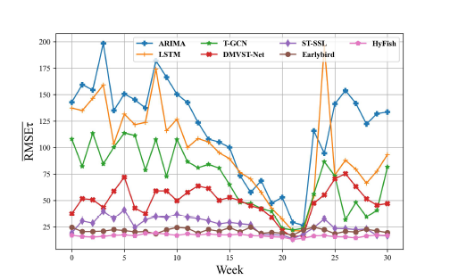
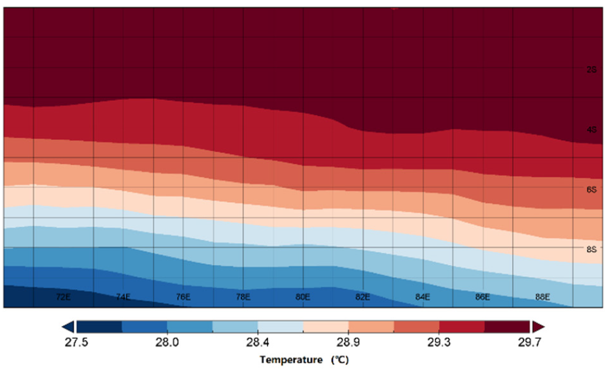

教育与访学
- 2001/09 - 2006/06上海交通大学 计算机应用技术，博士
- 1996/09 - 2000/06中国海洋大学 计算机科学与技术，学士
- 2017/09 - 2017/11德国德累斯顿工业大学 访问学者
- 2016/07 - 2016/08美国加州大学洛杉矶分校 访问学者
- 2010/09 - 2010/11德国慕尼黑工业大学 访问学者
物联网智能感知 · 海洋轨迹大数据 · 海洋大数据分析
中国海洋大学教授、博士生导师，长期从事智能感知系统、轨迹大数据挖掘与海洋信息技术研究。
About
洪锋，教授、博导、博士，长期从事物联网智能感知和轨迹大数据挖掘研究。先后主持国家自然科学基金面上项目 2 项、青年项目 1 项，并参与国家重点研发计划、973 计划、863 计划等 10 余项国家级课题研究。
在 ACM Computing Survey、Ocean Engineering、UbiComp、CHI、INFOCOM、SenSys 等国际学术期刊和会议发表论文 100 余篇，持续关注海洋场景下的感知系统、轨迹分析与智能应用。
Experience
Projects
Publications
近年论文主要发表于 ACM Computing Survey、UbiComp、CHI、INFOCOM、SenSys、IJCAI、EWSA、EAAI、Ocean Engineering、 Rev Fish Biol Fisheries等学术期刊和会议。
完整论文列表请参考学术主页平台。
Standards & Honors
Highlights






融合海洋水文因子的捕捞努力量分布预测模型。
Frontiers of Marine Science
Recruitment
团队主要围绕物联网智能感知、轨迹大数据挖掘与海洋信息分析开展研究，欢迎研究生以及有科研兴趣的本科生联系交流。
联系邮箱：hongfeng at ouc dot edu dot cn，通常 24 小时内回复。
Students
查看历届毕业生、在读学生、毕业合影与团队活动照片。
进入学生页面部分学生已建立个人学术主页，团队成员在智能感知、海洋计算和轨迹数据分析等方向持续开展研究。
English Version